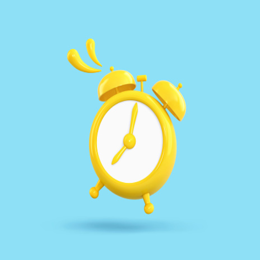

<ion-content>

    <ion-toolbar>
      <ion-buttons slot="start">
        <ion-menu-button menu="first" color="warning"></ion-menu-button>
      </ion-buttons>
  
    </ion-toolbar>

  <div class="main-content">

    <div class="user-profile">
      
  
      <div class="user-data">
        <h3 class="user-title">Bienvenido</h3>
        <h3 class="user-name">{{usuario}}</h3>
      </div>
    </div><!--div perfil-->

    <div class="content-div">
      <ion-slides [options]="swiperOpts">
        <ion-slide>
            
            <ion-button (click)="scan()" expand="block" fill="outline" size="large" shape="round">
                Escanear codigo
            </ion-button>
    
        </ion-slide>
      </ion-slides>

      <div class="buttons-div">

        <ion-grid fixed>
          <ion-row>

            <ion-col size="6">

              <ion-card>
                
                <ion-button (click)="mostarAyuda()" fill="clear">
                  Ayuda
                </ion-button>
              </ion-card>

            </ion-col>

            <ion-col size="6">
              <ion-card>
                
                <ion-button (click)="mostrarHistorial()" fill="clear">
                  Historial
                </ion-button>
              </ion-card>
            </ion-col>

            

          </ion-row>

        </ion-grid>

      </div>

    </div>
  
  </div>

</ion-content>
